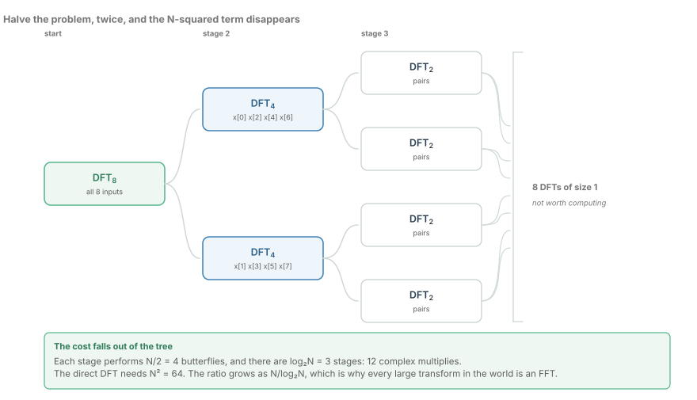
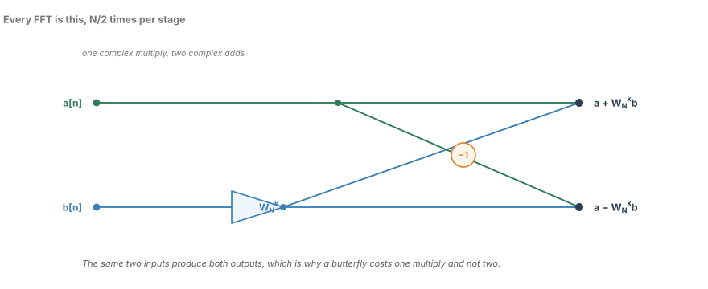
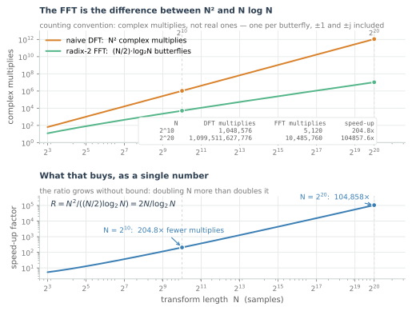
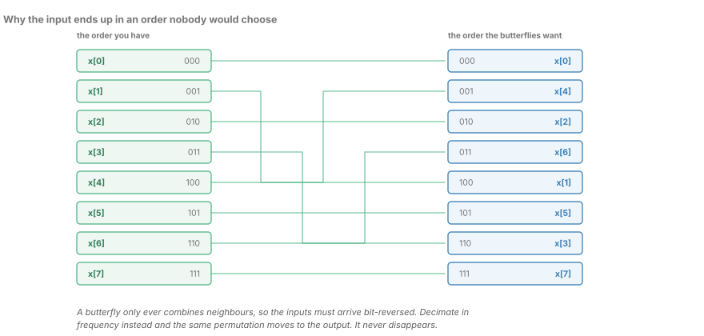
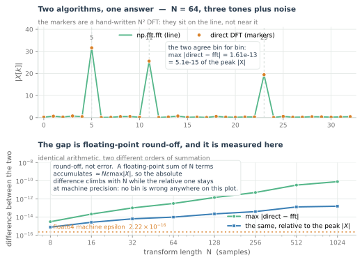
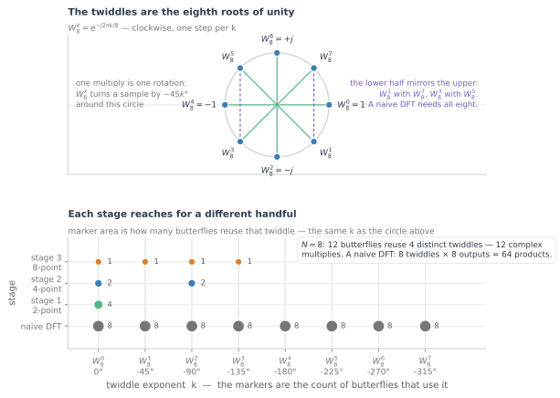
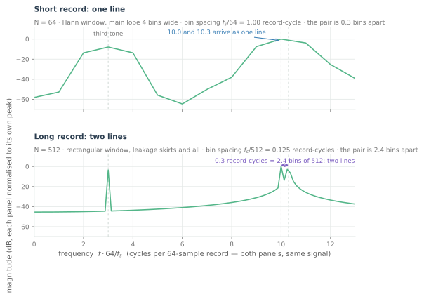

The FFT: How It Got Fast
Radix-2 decomposition, the butterfly, and the bit-reversal that everyone gets wrong once. Includes the cost table that explains why 5G and 800G both live on FFTs.
Every block in a coherent receiver is physics that has been argued into arithmetic: a photodiode, a transimpedance amplifier, an ADC, and then a long column of multiplies. The fast Fourier transform is the one block that is arithmetic alone. Nothing in it corresponds to a part you could order; it is the same $N^2$ complex multiplies the definition asks for, performed in a different order, and the reordering is worth orders of magnitude at the sizes that matter.
This chapter is about that reordering. I write FFT blocks for coherent optical firmware, where a 512-point transform is both an off-the-shelf component and a line in the power budget, and where the interesting questions are never "what is the FFT" but "which variant, in what order, at what word length, against what reference".
Four separable decisions make up the algorithm, and hardware prices them very differently. The radix-2 decomposition says how to split the problem. The butterfly says what one unit of work is. The twiddle table says which constants you need and how big it is. The bit-reversal permutation says where the samples have to sit in memory. Get the first three right and the transform is fast; get the fourth wrong and it is either wrong or expensive, depending on which way you guessed.
And because the transform is exact in exact arithmetic, most of what an implementation team actually argues about is the arithmetic it is not exact in. That argument is the second half of this chapter, and it is the part that decides whether the block ships.
The definition, and the price it implies
Start with the definition, because the FFT is not an approximation to it.
That is $N$ outputs, each a sum of $N$ terms. Evaluate it directly — a double loop, or one $N \times N$ matrix of twiddles multiplied into a vector — and the cost is $N^2$ complex multiplies. Not "about $N^2$": exactly $N^2$, because every output multiplies every input by a twiddle.
The DFT is a matrix multiply by a fixed matrix with enormous structure. The twiddle matrix is symmetric, its entries are powers of a single number, and its rows are periodic. The definition spends none of that structure, and the FFT is what happens when you spend all of it.
The direct evaluation is not a straw man. It is the right implementation for short transforms, it is the reference every FFT is tested against later in this chapter, and it is the only version whose cost you can state without qualification. It is also why the transform sat in textbooks for decades: the mathematics was settled long before anyone could afford to use it at scale.
Halving the problem, and halving it again

The decomposition begins with a choice about which inputs to group. Split the sequence into its even- and odd-indexed samples, $e[m] = x[2m]$ and $o[m] = x[2m+1]$, and write the sum over the two halves separately:
Nothing has been approximated; the terms have only been reordered. Now use $W_N^2 = W_{N/2}$, so that each sum is itself a DFT of length $N/2$:
with $E$ the $N/2$-point DFT of the even samples and $O$ the $N/2$-point DFT of the odd ones. That covers $k$ from $0$ to $N/2-1$ — half the spectrum. The other half is free. Both $E$ and $O$ are periodic with period $N/2$, and the twiddle at $k + N/2$ is the negative of the twiddle at $k$:
so
Two size-$N/2$ transforms plus $N/2$ twiddle multiplies have produced the whole size-$N$ spectrum. Apply the same split to each half and the recursion runs $\log_2 N$ levels deep, until the transforms are of size one and there is nothing left to compute. Every level carries $N/2$ of those combine operations, so the total is $(N/2)\log_2 N$ complex multiplies against the direct $N^2$. For $N = 8$ that is twelve against sixty-four.
The important thing about this derivation is what it does not contain. There is no approximation, no truncation, no window, no assumption about the input. Radix-2 decimation is an identity, and every FFT in the world computes exactly the same $N$ numbers the definition does. That is what makes the verification section later in this chapter possible at all.
The butterfly, and the multiply it declines to spend

The pair of equations above is called a butterfly, drawn with its inputs on the left and its outputs on the right. Read it as an arithmetic circuit and the economy is visible: node $a$ passes straight through to the sum, node $b$ is multiplied by the twiddle once, and the product is added to and subtracted from $a$.
One complex multiply, two complex adds, two outputs. The naive way to see the same pair of bins is to compute each output independently, which spends two twiddle multiplies where the algorithm needs one. That difference is not a micro-optimisation. An FFT that recomputes the product at every node still scales as $N \log N$, but it spends twice the multiplies an FFT should — the entire economy of the decomposition, thrown away once per butterfly.
There is a second family of the same algorithm. Decimation in frequency splits the input into its first and second halves rather than its even and odd samples, and produces a butterfly whose adds come first and whose twiddle multiplies the difference. It costs the same one multiply per two outputs. The two variants differ only in where the results emerge, and that turns out to decide an architectural question three sections from here.
The trivial twiddles are worth counting, because they are why real FFTs never actually spend $(N/2)\log_2 N$ multiplies. At $N = 8$, twelve butterflies contain four distinct twiddle values, and only two of the twelve multiplies are by something other than $1$, $-1$ or $\pm j$. A production FFT pulls those stages out of the loop and implements them as adds, subtractions and swaps, which is exactly the arithmetic a radix-4 or split-radix structure is built to expose.
What the reordering buys, in numbers

Two working points make the argument concrete, both counted under the convention stated earlier — one complex multiply per butterfly, trivial twiddles included.
| Transform length | Direct DFT | Radix-2 FFT | Speed-up |
|---|---|---|---|
| $N = 2^{10} = 1024$ | 1,048,576 multiplies | 5,120 multiplies | 204.8× |
| $N = 2^{20} = 1{,}048{,}576$ | 1,099,511,627,776 multiplies | 10,485,760 multiplies | 104,858× |
The ratio is $R = 2N/\log_2 N$, which is why the two curves on the figure are straight lines of different slope rather than a fast algorithm and a slow one. At $N = 1024$ the FFT is two hundred times cheaper. At $N = 2^{20}$ it is a hundred thousand times cheaper, and the gap is not a constant factor that a wider machine or a second pipeline closes — it is an exponent, and exponents do not respond to parallelism.
Put the same numbers in units an engineer feels. One complex multiply is four real multiplies and two adds, so the direct DFT at $N = 2^{20}$ is $4.4 \times 10^{12}$ real multiplies: over an hour on a single 1 GHz multiplier lane, for a single transform. The FFT does the same job in 10,485,760 multiplies, which is 42 milliseconds on that same lane — an hour against a twenty-fifth of a second — and then it is free to start on the next block.
The cost figure also shows where the argument stops being about arithmetic. The multiply count is not the reason an FFT block is expensive on a chip; it is the reason it is possible. Above a few hundred points the transform is limited by memory traffic — every stage reads the whole array and writes it back — and that observation is the design brief for every FFT accelerator ever built.
The permutation nobody avoids

The tree has a consequence that is easy to miss when you read the algebra. Look at which butterflies run first: the innermost level pairs samples whose original indices differ by $N/2$ — $x[0]$ with $x[4]$, $x[2]$ with $x[6]$ — and after that the pairs are never adjacent in index order again. Yet every butterfly must read two values that sit next to each other in the array it operates on. The samples have to be stored in the order the recursion reached them, which is the bit-reversed order of their original indices. At $N = 8$, $x[1]$ (binary 001) sits in slot 4 (100) and $x[3]$ (011) sits in slot 6 (110).
Decimation in frequency does not remove this. It takes natural-order input and produces bit-reversed output, which is the same permutation moved from one end of the block to the other. That is a genuinely useful choice rather than a cosmetic one, and the reason follows from what comes next in a receiver.
An FDE does three things per block: transform, multiply bin by bin, inverse transform. If the forward transform is decimation in frequency, its output is bit-reversed; the filter's bins can be stored in the same permuted order; the inverse transform accepts that order and emits natural order. The permutation then costs nothing at all, because nobody ever asked to see it. The alternative — a memory-based FFT with a bit-reversed addressing mode — costs an address generator, which is cheap. The alternative in a pipelined streaming FFT costs a commutator and delay lines to sort samples into the right streams, which is not.
So the honest statement is not that bit reversal is free, but that it is a real cost with three different prices depending on the architecture, and that a system which never asks for natural order pays the smallest one.
How you know it is right

Here is the test that matters more than any other in this chapter. The figure runs a direct $N^2$ DFT, built from the definition with no help from a library, against a known-good FFT on the same signal. The markers sit on the line, not near it.
For a 64-point record of three tones plus noise, the largest difference between the two transforms is $1.6 \times 10^{-13}$, against a peak spectrum magnitude of $31.6$ — about $5 \times 10^{-15}$ of the peak, some twenty machine epsilons. Sweeping $N$ from 8 to 1024, the absolute difference grows from $3.0 \times 10^{-15}$ to $7.9 \times 10^{-11}$ while the relative difference stays between $10^{-15}$ and $10^{-13}$, and the machine epsilon of double precision is $2.2 \times 10^{-16}$.
That growth is the expected behaviour, not a defect. A floating-point sum of $N$ terms accumulates an error of roughly $N\epsilon\max|X|$, and the direct DFT and the FFT add the same numbers in different orders, so they round differently. Both are right. The difference is round-off, and it is bounded and measured.
This is how a transform should be tested, and it is worth being blunt about the alternative. Eyeballing a spectrum plot proves nothing: the human eye accepts a 2% error on a logarithmic axis, which is exactly the kind of error that ruins an FDE. The test that catches bugs is a reference implementation, a numeric bound, and a sweep of the parameters the block will see.
The same discipline extends to fixed point, where the bound comes from the word length rather than from epsilon. I want per-stage error reporting, because the first stage whose output leaves the model's bound localises the bug immediately — a wrong twiddle, a scaling schedule off by one, or a permutation applied twice. A single end-to-end number tells you only that something, somewhere, is wrong.
The twiddles are a table, not a computation

A length-$N$ transform needs the $N$ values $W_N^k$, which are the $N$ points of the unit circle at angles $-2\pi k/N$. They are not independent, and the symmetries are worth more than the storage they save.
Negation and conjugation generate the whole circle from a quarter of it, and the four points $\pm 1, \pm j$ need no arithmetic at all. Sub-transforms use a subset of the same values, because $W_{M}^{j} = W_N^{\,jN/M}$ for any $M$ dividing $N$, so one table serves every stage of the recursion.
The right-hand panel of the figure is the tally that turns this into a hardware decision. For $N = 8$, stage 1 uses $W_8^0$ four times; stage 2 uses $W_8^0$ twice and $W_8^2$ twice; stage 3 uses each of $W_8^0$ through $W_8^3$ once. Twelve butterflies, four distinct twiddle values, and only two of those butterflies multiply by anything other than $1$ or $\pm j$. The direct DFT, by contrast, performs sixty-four products drawn from eight distinct twiddles.
The practical conclusion is unglamorous: store the twiddles in ROM. A 512-point transform needs a table only a fraction of the transform's length, at twelve to sixteen bits, which is a fraction of a kilobyte that a synthesis tool will not even notice. Computing sines and cosines on the fly costs an oscillator's worth of logic, burns power on every sample of every block, and adds a rounding error you did not budget for in a place where exactness is cheap. Store them, and let the word length of the table be a deliberate design parameter rather than an accident of a library call.
What the transform is for, and what it cannot buy

Finally, what the transform is actually for, since the cost argument sometimes crowds it out. The figure holds a signal fixed — tones at 10.0 and 10.3 cycles per 64-sample record, plus a third at 3.0 — and changes only the record length.
At $N = 64$ the bin spacing is one cycle per 64-sample record, so the close pair is 0.3 bins apart and the Hann window's main lobe is four bins wide. The two tones appear as one line, and no amount of cleverness in the transform will separate them, because the information is not in the record.
At $N = 512$ the spacing is 0.125 record-cycles and the pair is 2.4 bins apart. Two lines, resolved, with the leakage skirts of a rectangular window either side. Nothing about $N = 512$ made the algorithm smarter; the longer record saw more of the signal.
That is the resolution law, and it is the one people most often try to buy with transform size instead:
Resolution is observation time. Zero-padding an $N = 64$ record out to 512 points gives 512 bins at the same one-cycle spacing — an interpolated curve through the same information, which is occasionally exactly what you want for reading a peak position and never what you want for separating two tones.
The transform is also not a filter and not an estimator. It reports what the windowed record contains, including the window. If the specification says "resolve two carriers 100 MHz apart", the answer is a record long enough to see them, and the transform size then follows from the record rather than leading it.
What to carry forward
- The DFT is the definition: $N$ outputs, $N$ terms each, $N^2$ complex multiplies. The FFT is the same answer computed in a different order.
- Decimation in time splits even and odd samples; each half is a DFT of size $N/2$, recombined as $E + WO$ and $E - WO$ for $k = 0 \dots N/2-1$.
- The butterfly is that pair of outputs, and it costs one complex multiply because both outputs reuse the same product. That reuse is the algorithm.
- The cost is $(N/2)\log_2 N$ complex multiplies in $\log_2 N$ stages: 12 against 64 at $N = 8$, 5,120 against 1,048,576 at $N = 1024$.
- Bit reversal is real. Decimation in frequency moves it to the output rather than removing it, and an implementation that never asks for natural order never pays for it.
- Only a quarter of the twiddle circle is independent, sub-transforms reuse it, and a ROM is cheaper than a sine engine.
- Test against a reference and a bound, not against a picture. The difference between a hand-written DFT and a good FFT sits at machine precision and grows predictably with $N$.
- Real inputs need only $N/2 + 1$ bins, and sizing that buffer correctly is a recurring bug in shipping code.